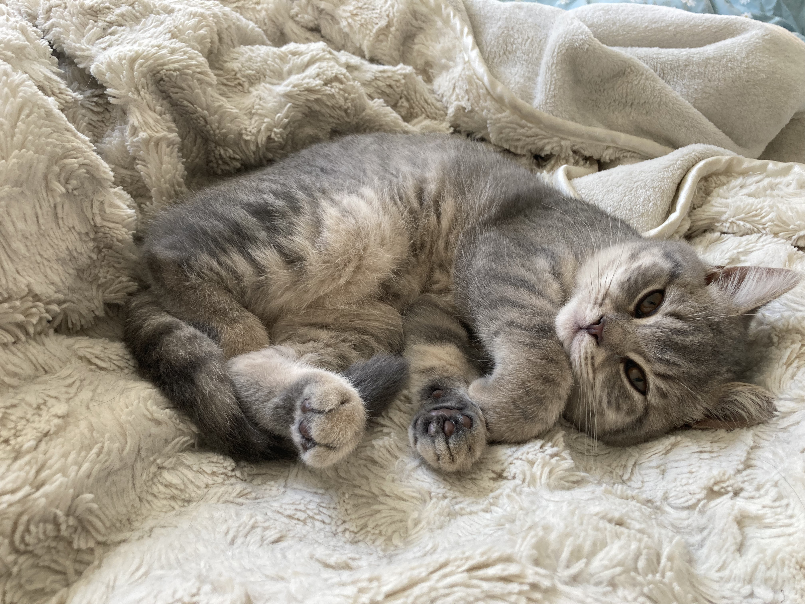
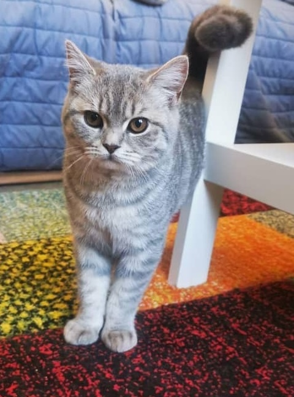
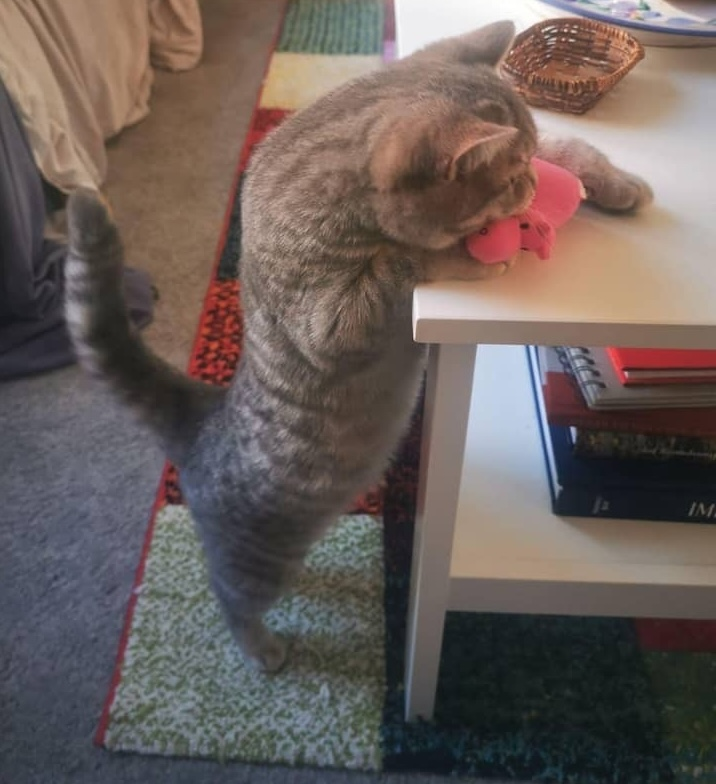
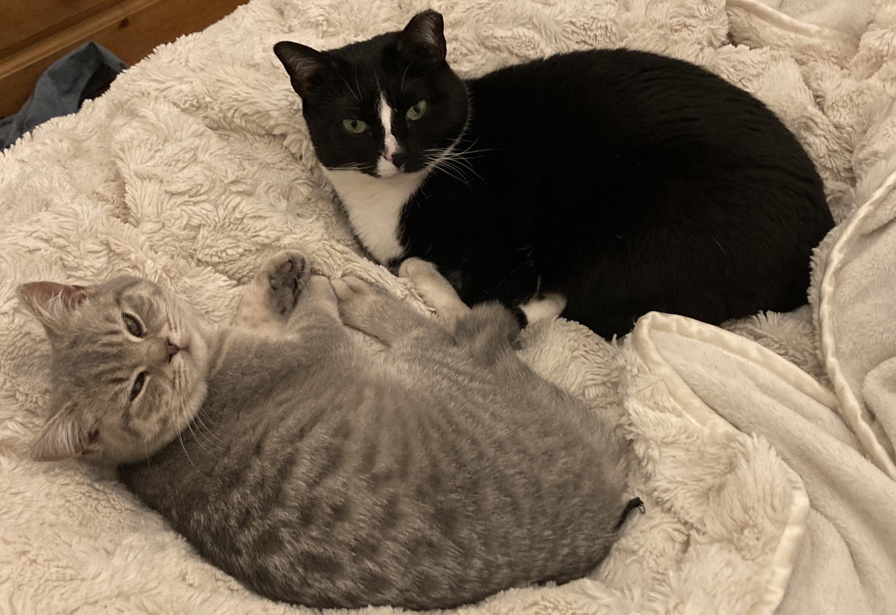
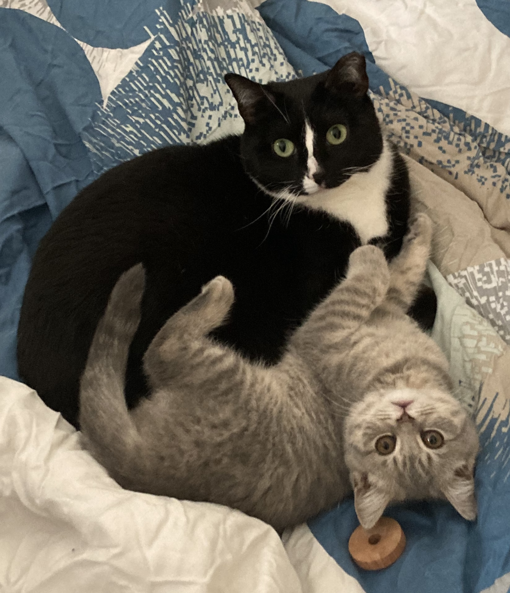
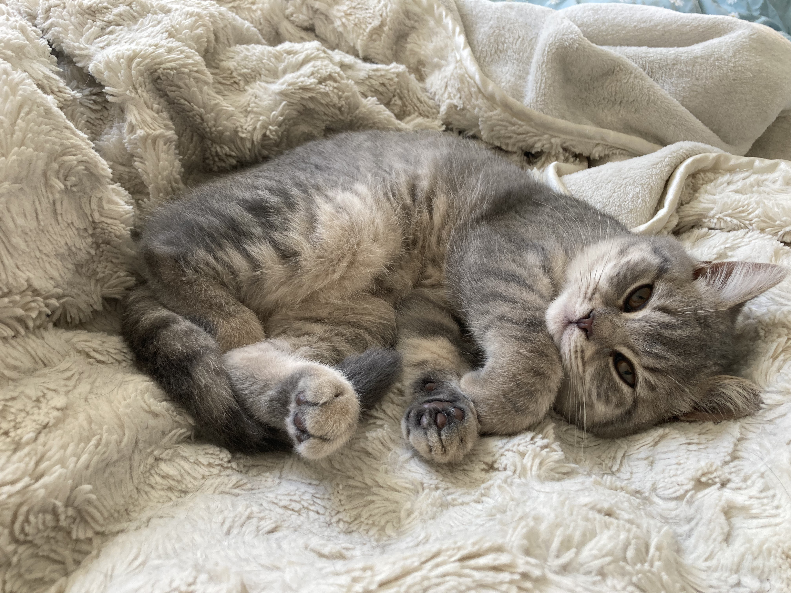
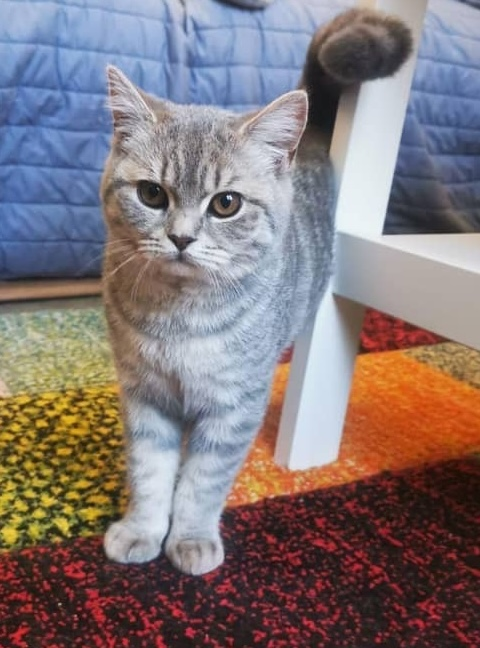
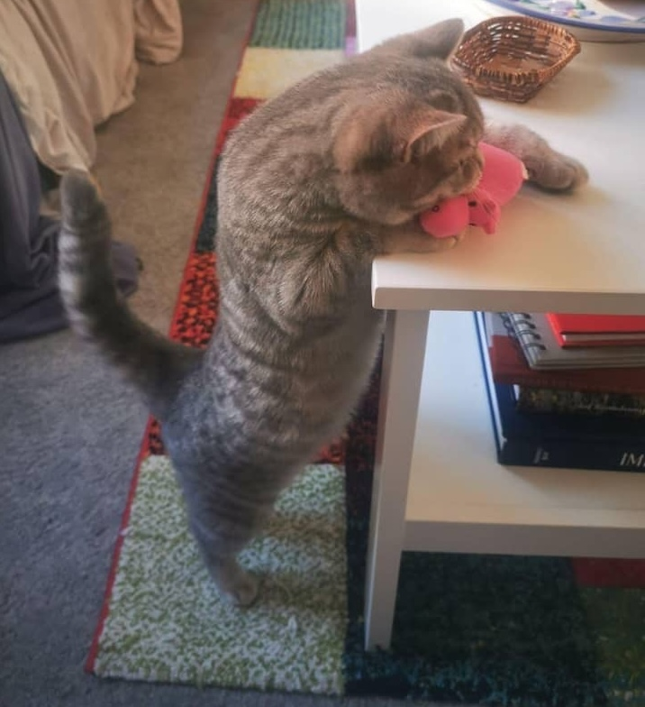
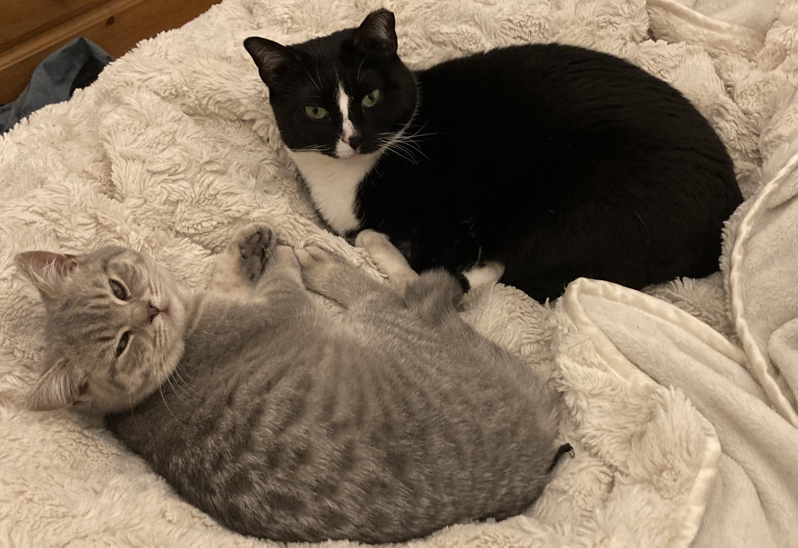
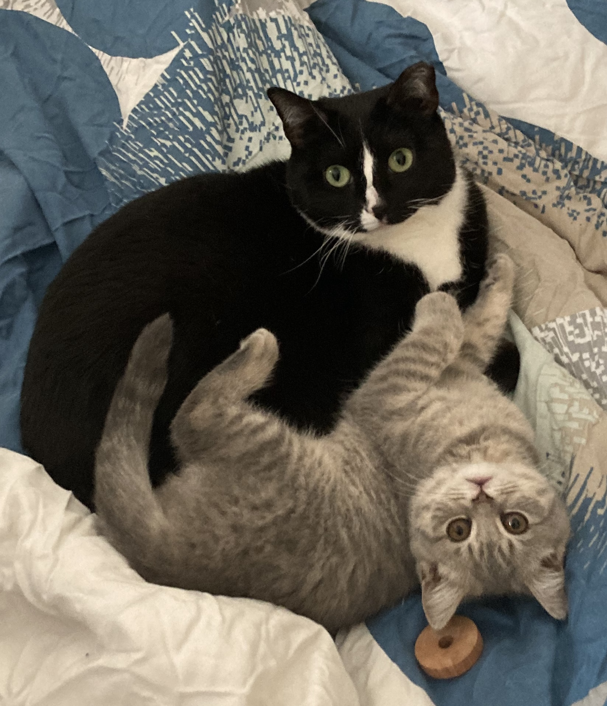

I am a Chancellor's Fellow (=UK lecturer=US Assistant professor) at the University of Edinburgh in the School of Informatics. I am affiliated with ILCC (Institute for Language, Cognition, and Computation) and Edinburgh NLP.
I am interested in reasoning about and understanding implicit meaning in language. My recent work has focused on generics (a specific type of language generalization). This includes generics, non-monotonic reasoning, commonsense reasoning, and neuro-symbolic systems that incorporate ideas from linguistics. Specifically, at Edinburgh I will be working on developing interpretable neuro-symbolic methods to improve defeasible reasoning in computational systems. These methods will incorporate theoretically-grounded components into deep learning models. I will be using these methods to improve reasoning in real-world texts, including dialogues, argumentation, and text-based games.
If you are interested in collaborating, please contact me.
I received my PhD in computer science from Columbia University where I worked with Prof. Kathleen McKeown. My thesis, “Understanding and Reasoning about Implicit Meaning in Language” focused on stance detection, as well as generics. During my PhD, I interned at AI2 (on the MOSAIC team, working with Jena Hwang and Chandra Bhagavatula) and at Amazon Science (working with Miguel Ballesteros and Shuai Wang). Prior to Columbia, I worked on commonsense reasoning as an undergraduate researcher with Prof. Yejin Choi at the University of Washington.
My CV is here.
Contact: emily.allaway@ed.ac.uk
Publications
- MGen: Millions of Naturally Occurring Generics in Context
Gustavo Cilleruelo Calderón, Emily Allaway, Barry Haddow, Alexandra Birch.
SCiL 2025.
[pdf] - Evaluating Defeasible Reasoning in LLMs with DEFREASING
Emily Allaway and Kathleen McKeown.
NAACL 2025.
[pdf] - Generics are Puzzling. Can language models find the missing piece?
Gustavo Cilleruelo Calderón, Emily Allaway, Barry Haddow, and Alexandra Birch.
COLING 2025.
[pdf] - Exceptions, Instantiations, and Overgeneralization: Insights into How Language Models Process Generics
Emily Allaway, Chandra Bhagavatula, Jena D. Hwang, Kathleen McKeown, and Sarah-Jane Leslie.
Computational Linguistics: Special Issue on Language Learning, Representation, and Processing in Humans and Machines, 2024.
[pdf] - Beyond Denouncing Hate: Strategies for Countering Implied Biases and Stereotypes in Language
Jimin Mun, Emily Allaway, Akhila Yerukola, Laura Vianna, Sarah-Jane Leslie, Maarten Sap.
Findings of EMNLP 2023.
[pdf] - Penguins Don't Fly: Reasoning about Generics through Instantiations and Exceptions
Emily Allaway, Jena D. Hwang, Chandra Bhagavatula, Kathleen McKeown, Doug Downey, Yejin Choi.
EACL 2023.
[pdf] - Zero-Shot Stance Detection: Paradigms and Challenges
Emily Allaway and Kathleen McKeown.
Frontiers of Artificial Intelligence 2023.
[pdf] - Towards Countering Essentialism through Social Bias Reasoning
Emily Allaway, Nina Taneja, Sarah-Jane Leslie, Maarten Sap.
NLP4PosImp Workshop, EMNLP 2022.
[poster] [pdf] - Legal and Political Stance Detection of SCOTUS Language
Noah Bergam, Emily Allaway, Kathleen McKeown.
NLLP Workshop, EMNLP 2022.
[pdf] - Seeded Hierarchical Clustering for Expert-Crafted Taxonomies
Anish Saha, Amith Ananthram, Emily Allaway, Heng Ji, Kathleen McKeown.
Findings of EMNLP 2022.
[pdf] - SafeText: A Benchmark for Exploring Physical Safety in Language Models
Sharon Levy, Emily Allaway, Melanie Subbiah, Lydia Chilton, Desmond Patton, Kathleen McKeown, William Yang Wang.
EMNLP 2022.
[pdf] - Mitigating Covertly Unsafe Text within Natural Language Systems
Alex Mei, Anisha Kabir, Sharon Levy, Melanie Subbiah, Emily Allaway, John Judge, Desmond Patton, Bruce Bimber, Kathleen McKeown, William Yang Wang.
Findings of EMNLP 2022.
[pdf] - Mapping the Multilingual Margins: Intersectional Biases of Sentiment Analysis Systems in English, Spanish, and Arabic
António Câmara, Nina Taneja, Tamjeed Azad, Emily Allaway, Richard Zemel.
LT-EDI Workshop, ACL 2022.
[pdf] - Does Putting a Linguist in the Loop Improve NLU Data Collection?
Alicia Parrish, William Huang, Omar Agha, Soo-Hwan Lee, Nikita Nangia, Alex Warstadt, Karmanya Aggarwal, Emily Allaway, Tal Linzen, and Samuel R. Bowman.
Findings of EMNLP 2021.
[pdf] - Human Rationales as Attribution Priors for Explainable Stance Detection
Sahil Jayaram and Emily Allaway.
EMNLP 2021.
[pdf] [code and data] - Sequential Cross-Document Coreference Resolution
Emily Allaway, Shuai Wang, and Miguel Ballesteros.
EMNLP 2021.
[pdf] - Adversarial Learning for Zero-Shot Stance Detection on Social Media
Emily Allaway*, Malavika Srikanth*, and Kathleen McKeown.
NAACL 2021.
[pdf] [code and data] - A Unified Feature Representation for Lexical Connotations
Emily Allaway and Kathleen McKeown.
EACL 2021.
[pdf] [code and data] [poster] - Event-Guided Denoising for Multilingual Relation Learning
Amith Ananthram, Emily Allaway, Kathleen McKeown.
COLING 2020.
[pdf] [code] - Zero-Shot Stance Detection: A Dataset and Model using Generalized Topic Representations
Emily Allaway and Kathleen McKeown.
EMNLP 2020.
[pdf] [code and data] [poster] - GAIA at SM-KBP2019 - A Multi-media Multi-lingual Knowledge Extraction and Hypothesis Generation System
Manling Li, Ying Lin, Ananya Subburathinam, Spencer Whitehead, Xiaoman Pan, Di Lu, Qingyun Wang, Tongtao Zhang, Lifu Huang, Heng Ji, Alireza Zareian, Hassan Akbari, Brian Chen, Bo Wu, Emily Allaway, Shih-Fu Chang, Kathleen McKeown, Yixiang Yao, Jennifer Chen, Eric Berquist, Kexuan Sun, Xujun Peng, Ryan Gabbard, Marjorie Freedman, Pedro Szekely, T.K. Satish Kumar, Arka Sadhu, Ram Nevatia, Miguel Rodriguez, Yifan Wang, Yang Bai, Ali Sadeghian, Daisy Zhe Wang.
TAC 2019.
[pdf] - ATOMIC: An Atlas of Machine Commonsense for If-Then Reasoning
Maarten Sap, Ronan LeBras, Emily Allaway, Chandra Bhagavatula, Nicholas Lourie, Hannah Rashkin, Brendan Roof, Noah A Smith, and Yejin Choi.
AAAI 2019.
[pdf] [Project Page] - GAIA - A Multi-media Multi-lingual Knowledge Extraction and Hypothesis Generation System
Tongtao Zhang, Ananya Subburathinam, Ge Shi, Lifu Huang, Di Lu, Xiaoman Pan, Manling Li, Boliang Zhang, Qingyun Wang, Spencer Whitehead, Heng Ji, Alireza Zareian, Hassan Akbari, Brian Chen, Ruiqi Zhong, Steven Shao, Emily Allaway, Shih-Fu Chang, Kathleen McKeown, Dongyu Li, Xin Huang, Kexuan Sun, Xujun Peng, Ryan Gabbard, Marjorie Freedman, Mayank Kejriwal, Ram Nevatia, Pedro Szekely, T.K. Satish Kumar, Ali Sadeghian, Giacomo Bergami, Sourav Dutta, Miguel Rodriguez, Daisy Zhe Wang.
TAC 2018.
[pdf] - Event2Mind: Commonsense Inference on Events, Intents, and Reactions
Hannah Rashkin, Maarten Sap, Emily Allaway, Noah A. Smith and Yejin Choi
ACL 2018.
[pdf] [Project Page]
* denotes equal contribution
Research Group
Current PhD students:
- Xiaotang Du (co-supervised with Pasquale Minervani and Ivan Titov)
- Chenxin Diao
- Alison Chi
- Dayyán O'Brien
Affiliated students
Current MSc students:
- Hanna Yakusevych
- Xinwei Niu
- Jinghong Li
- Ignacio Porras Vargas
Teaching
- 2025/26 — Lecturer for Researching Responsible and Trustworthy Natural Language Processing
- Spring 2026 — Lecturer for Foundations of Natural Language Processing
- Spring 2025 — Guest lecture for Natural Language Understanding, Generation, and Machine Translation
- Autumn 2024 — Guest lecture for Accelerated Natural Language Processing
Misc
In my spare time I like to travel, play music, and ballroom dance.
I have two cats named Mila and Phoebe. They manage to coexist.


 








